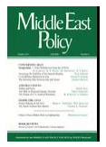

收录于合集

简 介
【文章原题】 Iraq’s Tribal “Sahwa ”: Its Rise and Fall
【作者简介】 本拉德博士（Myriam Benraad ）， 巴黎政治研究所(巴黎政治学院)和国际研究中心(CERI)的研究员，曾担任伊拉克政府的经济改革和反腐败政策顾问。
【文章来源】 Middle East Policy，Vol.18(15 March 2011).
【 期刊介绍】 Middle East Policy成立于1982年，由Wiley-Blackwell代表Middle East Policy Council发行，每季度出版的学术期刊，关注主题为中东地区的外交政策。
【 编译】 李 甜

核心观点
部落觉醒运动在2006年为减少伊拉克的暴力流血事件作出了重大贡献，但是在美国准备从伊拉克撤军之际，部落觉醒运动的未来有望成为伊拉克新政府面临的最艰巨挑战之一。
从2007年到2008年，伊拉克的部落“Sahwa”(阿拉伯语中“觉醒”的意思)是美国“增兵”战略的关键组成部分，在很大程度上被认为是美国大幅度减少全国暴力活动作出了贡献。然而，在当前暴力死灰复燃、2010年僵局引发的持续政治紧张局势以及美国军方计划在2011年底之前撤出其剩余部队的背景下，Sahwa的未来成为伊拉克稳定和成功“民主”过渡的最重要考验之一。
一、从成功到失败
部落觉醒运动最初仅限于少数部落人物在安巴尔省(al-Anbar)反抗基地组织(al- Qaeda)的起义——当时，安巴尔省是叛乱分子坚不可破的要塞。自2003年以来，该省的几个逊尼派阿拉伯部落与基地组织就圣战组织的极端战斗方法和以数百名领导人为目标的杀戮活动发生了潜在冲突。2005年初，Albu Mahal部落的几个酋长开始与美军合作，以驱逐基地组织出境。在2007年美国“增兵”的背景下，Sahwa很快站稳了阵地。
几年后，情况发生了戏剧性的变化。美国2009年从伊拉克城市撤军，为基地组织提供了新的活动场所，特别是在安巴尔，那里的安全局势最近不断恶化，这使部落觉醒运动暴露在大规模报复性袭击之下。
（一）经济上的不满
人们不应忘记，部落觉醒运动最初是作为一种根深蒂固的“自私”现象出现的，Sahwa从来没有从重新兴起的反对基地组织的“部落爱国主义”中崛起。从其存在的一开始，Sahwa就受到其成员的经济动机的内在驱动。如果他们与美国的便利联盟不能带来足够的利益或不能得到令人满意的奖励，该运动就有可能及时瓦解，各部落就有可能重新诉诸暴力。
（二）政府的镇压
Sahwa继续垮台的第二个原因是伊拉克中央政府对其成员怀有强烈的敌意。从一开始，巴格达就对其与美国的联盟充满怀疑和怨恨，担心其在地面上的成功可能转化为实际的合法性和政治权力。自从2008年，Sahwa的控制权正式移交给伊拉克当局以来，部落和巴格达之间的关系继续恶化。
二、过去与现在
除了目前的情况之外，要理解Sahwa的逐渐衰落，还需要将这场运动置于伊拉克部落主义及其许多转变的更广泛的历史之中，这相当于继续进行“颠覆”部落规范和结构的过程。
（一）多样性和党派之争
在许多方面，Sahwa的情况重新激起了关于部落主义在伊拉克社会中的地位的辩论，以往对伊拉克部落主义的研究受到过于简单的假设的限制，特别是认为这是一种同质和静止的现象。在此必须指出，伊拉克的部落主义从来就不是一个统一的现实，相反，它是极为漏洞百出和多变的。
这种解构在很多方面都体现在Sahwa自身的组织和演变中。尽管这场运动最初可能是针对基地组织的一次共同动员，从而显示出其领导人之间的明显团结，但它从来就不是一个统一的现实。这就解释了为什么自Sahwa首次出现以来，Sahwa在结构上就无法为伊拉克制定长期政治计划。
（二）机会主义，转变忠诚
人们普遍认为，Sahwa是一群纯粹的机会主义者，出价最高的人可以收买他们的忠诚，这是使Sahwa丧失信誉的关键因素之一。许多伊拉克人从一开始就对这些部落决定帮助美国军队的真正动机表示怀疑，他们经常称这些部落为“暴徒”、“土匪”和“雇佣军”，或“21世纪头十年的部落”——指的是萨达姆·侯赛因(Saddam Hussein)时代使用的标签“1990年代的部落”。
三、国家建设与和解
各部落自己的正义论坛和和解程序使部落主义难以与正式的民族和解相协调，尽管Sahwa领导人经常宣称他们主张“民族团结”。鉴于该运动目前的衰败及其对伊拉克社会政治格局的更大分裂所作的贡献，很难预见，不论现在还是以后，Sahwa如何能成为民族和解的支柱。
四、结论
（一）在美国准备从伊拉克撤军之际，Sahwa的未来有望成为伊拉克新政府面临的最艰巨挑战之一。
（二）马利基解除武装并解散该运动的意愿，可能会导致更大程度的暴力，并可能导致大规模冲突的回归。
（三）最终，必须找到一个妥协方案，来满足觉醒运动后部落的主要要求，建立他们的忠诚，防止他们回归暴力。与这一战略相对应的将意味着各部落在其地区享有更大的自治权，从而使巴格达失去对部分国家领土的控制，虽然这是含蓄地表示赞同的。
（四）美国应该从Sahwa的试验中吸取适当的教训，特别是在涉及其他冲突前线，特别是阿富汗和巴基斯坦的部落参与的时候。
点击左下角“ 阅读原文 ”获取原文pdf版
**
**
声明
此文为国政学人微信公众平台外文编译系列文章之一，由国政学人编辑首发，不代表本平台观点。欢迎转发分享，转载请务必注明来源。如有问题，请联系guozhengxueren@163.com
更多阅读
国政学人 （ID：guozhengxueren)
为方便学人及时阅读高质量文章
别忘把国政学人设置 星标 哦~